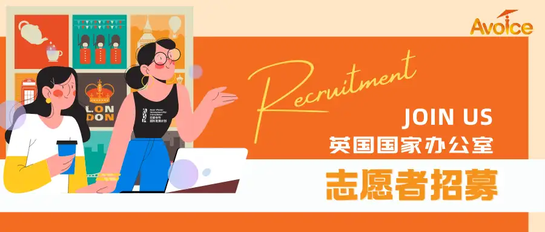
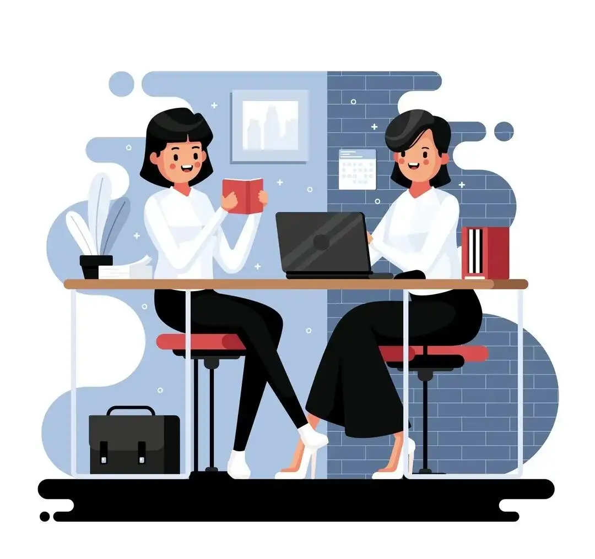
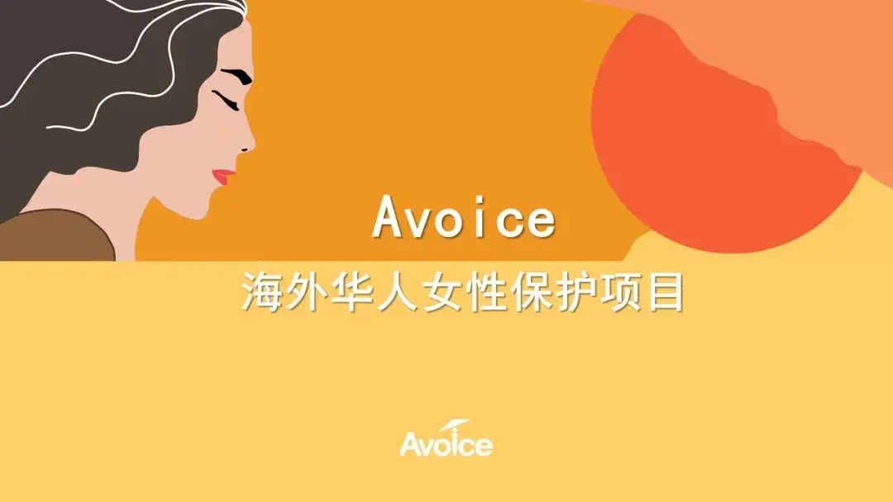

招募信息
综合事务处负责人
主要职责
1. 统筹日常行政管理、人员招聘与人事管理；
2. 监督和管理机构财务及法律事务，确保机构运营符合相关法律法规；
3. 推进机构团队建设与志愿者激励，确保机构成员的积极参与；
4. 协助制定机构双月和年度工作计划并负责相应的结果追踪及反馈。
岗位要求
1. 具备出色的执行力、沟通能力以及统筹能力；
2. 拥有行政、人事管理等综合事务工作经验者优先考虑；
3. 每周5小时以上的工作时间投入，一年内base在英国。
合作拓展处负责人
主要职责
1. 拓展及维护本地合作网络，与社会组织、政府机构及企业建立合作关系；
2. 策划并组织各类合作项目和活动，提升机构的公众影响力；
3. 为总部大型活动及项目的海外推广及合作提供支持。
岗位要求
1. 具备出色的沟通能力及项目管理能力；
2. 具备极强的的英语口语和书面表达能力；
3. 熟悉英国的社会和文化背景，善于拓展人脉关系；
4. 每周5小时以上的工作时间投入，一年内base在英国。
救助支持处负责人
主要职责
1. 统筹管理援助团队及相关支持服务工作；
2. 策划并组织线下及线上的宣传活动，持续触达潜在援助对象；
3. 持续建立及维系本地救助网络，确保为援助对象提供专业且全面的支持。
岗位要求
1. 对家庭暴力、性别暴力问题有深刻理解，具有相关领域的学习及研究经验；
2. 具备出色的沟通能力、责任意识与同理心，能够妥善处理援助案件；
3. 拥有心理咨询、法律援助或相关救助服务的经验者优先；
4. 每周5小时以上的工作时间投入，一年内base在英国。
筹资管理处负责人
主要职责
1.统筹机构筹资工作，制定筹资计划并有效执行；
2. 策划并组织各类筹资活动和项目，为机构持续筹集运营资金；
3. 持续拓展和维护机构与资助方关系。
岗位要求
1.拥有公益筹资和项目管理经验，了解英国的筹资环境及相关法规；
2. 具备出色的沟通和谈判能力，能与不同类型的资助方建立联系；
3. 每周5小时以上的工作时间投入，一年内base在英国。
投递方式
如果你对其中任一部门和岗位感兴趣，请扫描以下二维码进行投递。
*提醒：为避免无效申请，表单中“意向岗位”一栏的选项请在以上开放的4个岗位中进行选择。
投递截止日期：
2024年12月31日

您将获得：
• 志愿者证书（工作满6个月及以上）/实习证明（工作满1年及以上）
• 参与评选月度和年度优秀志愿者
• 参加内外部的能力建设和交流活动
• 参加志愿者团建活动
• 使用志愿者积分兑换项目周边产品及学习资料和工具
• 担任项目管理职位，加入国际青年志愿者网络校友会
• 得到项目专家顾问的指导和推荐信
• 项目合作伙伴的实习、活动内推
• 参与性别平等、女性保护与发展、青年赋能等相关领域的课题研究
• 与国内外公益机构、学术机构、基金会的合作交流机会
• 与来自世界各地、志同道合的伙伴一起学习成长
……
纤纤不绝林薄成，涓涓不止江河生。
在AWDPI发展的道路上，盼有您相伴！
欢迎通过下方链接了解更多关于我们的信息：
AWDPI
亚裔女性国际发展计划
「爱与平等——AWDPI与全球亚裔女性共成长」链接

Avoice
海外华人女性保护项目
Avoice海外华人女性保护项目和亚裔女性国际发展论坛为AWDPI的品牌项目。

Avoice影响力报告链接

排版/封面｜由晨阳
图片来源｜freepik